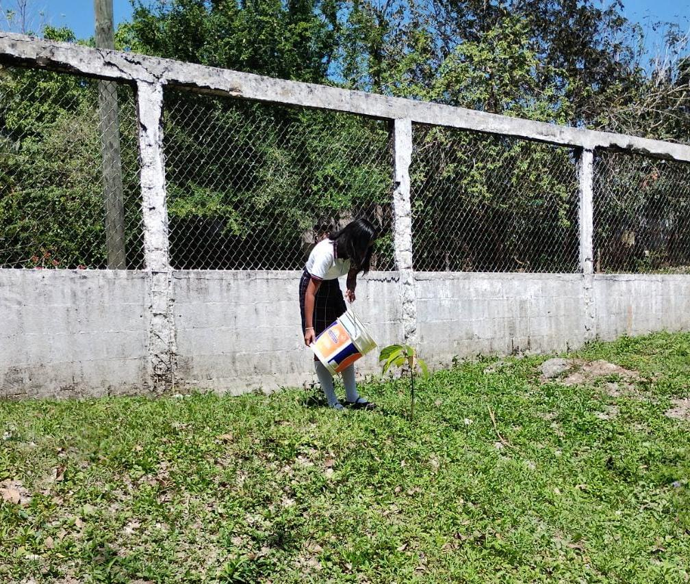
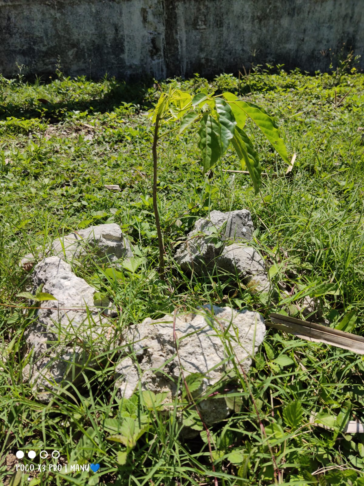
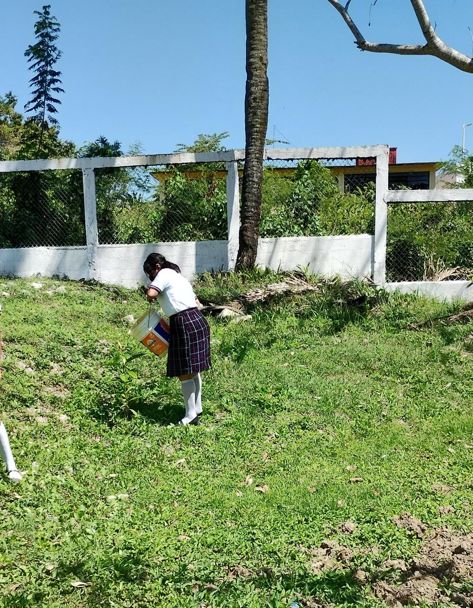

Proyecto reciclando, ando beneficiando
El proyecto se basa en el PET, recolectarlos y canjearlos por despensa
evitando que sean quemados.
Basura electronica
Se compró un contenedor en conjunto con los dos grupos de sexto semestre
Siembra de plantas
Sembrado y cuidado de las plantas
  